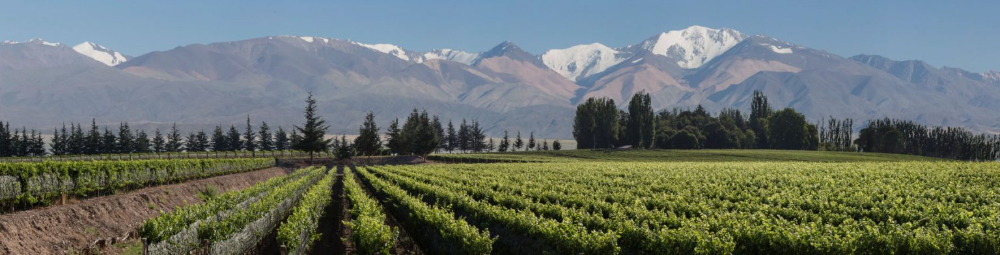

VALLE DE UCO

La temperatura anual aquí es entre 14 y 15 ° C, y las ubicaciones de los viñedos varían de
900 a 1500 metros sobre el nivel del mar (desde la ciudad de Tunuyán hasta Gualtallary).
Estos son suelos poco profundos, aluviales,
con grava y cantos rodados, pero sin arcilla, y una pendiente pronunciada.
Los vinos en esta región presentan la mayor acidez del país.
Uco Valley produce uvas de alta calidad para hacer blancos y rojos
con un gran potencial de envejecimiento en barriles.
Las principales variedades de la región son Semillon, Chardonnay, Sauvignon Blanc,
Viognier, Cabernet Sauvignon, Malbec, Merlot,
Tempranillo, Syrah, Cabernet Franc, Petit Verdot y Pinot Noir